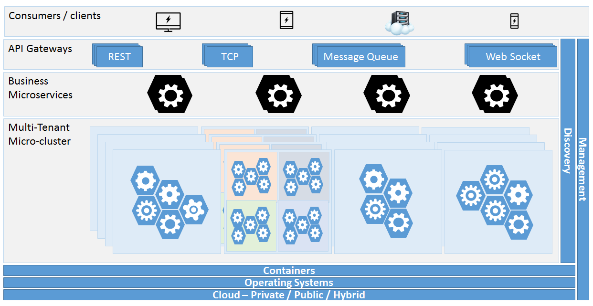

Overview
Develop pure java microservices with scalecube-services, an Un-Opinionated Library. Create distributed applications by breaking your application apart into decoupled services that can be built and scaled separately.
ScaleCube Microservices is a message-driven and asynchronous by default, built to scale due to it's the peer-to-peer nature. powered by scalecube-cluster gossip capabilities to answer the cross-cutting-concerns such as; canary testing, service discovery, location transparency, fault-tolerance and real time failure-detection. ScaleCube Microservices provides fluent java-8 functional APIs and Completable Futures benefits. The ScaleCube Microservices are lightweight and embeddable in-order to reduce restrictions regards service implementation, It only requires a simple declaration of the Service APIs as entry point to the service component. With ScaleCube Microservices its possible to provision services within same process, many process on same hardware or many process on many hardwares this gives enables ease of development and testing of a distributed system. ScaleCube Microservices features:
Basic Concepts
Microservice
A Lightweight system component running in it's own process. Built around business capabilities and independently deployable by fully automated deployment machinery. Isolated, Distributed and have well bounded context communicates via APIs. member in a microservices cluster, discoverable and aware of faliure
Service Discovery
With Scalecube Microservices each Microservice self-register at the cluster and utilizes the cluster gossip-protocol to declare and register so it can transparently communicate with it's peer microservices that share the same cluster group.
Routing
Microservice may have more then one instance or version of an instance at the cluster the routing strategy is resposible to select the relevant microservice instance when invoking a service. it can be but not limited to: Round-Rubin, Random Selection, Session based selection ect.
Service Proxy
Microservices are message driven and communicate via well defined service interface APIs from the consumer side a proxy is a client to a microservices generated from the Microservice interface.
Getting Started
Maven Repository
The ScaleCube Services is hosted on Maven Central. In order to use it just add dependency on the latest version in your pom.xml file:
<dependency>
<groupId>io.scalecube</groupId>
<artifactId>scalecube-services<artifactId>
<version>1.0.0<version>
</dependency>
Define a Microservice
A Microservice is defined using a Service interface the service interface is simple java interface annotated with a @Service annotation and @ServiceMethod.
@Service
public interface GreetingService {
@ServiceMethod
CompletableFuture<GreetingResponse> greeting(GreetingRequest request);
}
Implement
Implementing a microservice interface is quite straightforward:
public class GreetingServiceImpl implements GreetingService {
@Override
public CompletableFuture<GreetingResponse> greeting(GreetingRequest request) {
return CompletableFuture.completedFuture(new GreetingResponse("Hello " + request.name()));
}
}
Provision a Microservice
so far we learned that microservice is yet another java component with two decorations to run the microservice we need to provision it in a cluster:
// Create microservice provider
Microservices provider = Microservices.builder()
.services(new GreetingServiceImpl())
.build();
Consume a Microservice
// Create microservice consumer
Microservices consumer = Microservices.builder()
.seeds(providerAddress) // the address of any node at the cluster.
.build();
// Get a proxy to the service API.
GreetingService greetingService = consumer.proxy()
.api(GreetingService.class) // the interface of the service.
.create();
// Call service and when complete print the greeting.
greetingService.greeting(new GreetingRequest("Joe"))
.whenComplete((result, error) -> { // handle the async response.
System.out.println(result.greeting());
});
Using Service Tags Example
// Create gateway instance.
Microservices gateway = Microservices.builder().build();
// Create member node1 with A/B testing tag.
Microservices node1 = Microservices.builder()
.seeds(gateway.cluster().address())
.services(ServiceConfig.builder().service(new GreetingServiceImplA())
.tag("Canary-Testing", "A").tag("Weight", "0.3").add()
.build())
.build();
// Create member node2 with A/B testing tag.
Microservices node2 = Microservices.builder()
.seeds(gateway.cluster().address())
.services(ServiceConfig.builder().service(new GreetingServiceImplB())
.tag("Canary-Testing", "B").tag("Weight", "0.7").add().build())
.build();
// get a proxy to the service api with ABTesting router.
GreetingService service = gateway.proxy()
.api(GreetingService.class) // create proxy for GreetingService API
.router(CanaryTestingRouter.class) // define a custom router
.create();
// call the service 100 times.
for (int i = 0; i < 100; i++) {
service.greeting("joe").whenComplete((result, ex) -> {
if (ex == null) {
if (result.startsWith("B")){
// print the greeting.
System.out.println("this is response from B:" + result);
}
} else {
}
});
}
Implementing a custom router for the example above
// A custom router must implement Router interface
public class CanaryTestingRouter implements Router {
private ServiceRegistry serviceRegistry;
// if we want a handle to scalecube-service-registry we provide a constructor
// that accepts ServiceRegistry as input parameter.
public CanaryTestingRouter(ServiceRegistry serviceRegistry) {
this.serviceRegistry = serviceRegistry;
}
@Override // implement the route request for a given service Definition
public Optional<ServiceInstance> route(ServiceDefinition serviceDefinition) {
// this examples demo a weightedRandom service instance selection.
RandomCollection<ServiceInstance> weightedRandom = new RandomCollection<>();
// ask service registry to locate service by name
// this is local call (in memory) as scalecube knows all about cluster services.
serviceRegistry.serviceLookup(serviceDefinition.serviceName())
.stream().forEach(instance->{
weightedRandom.add(
Double.valueOf(instance.tags().get("Weight")),
instance);
});
return Optional.of(weightedRandom.next());
}
}
Bugs and Feedback
For bugs, questions and discussions please use the GitHub Issues.